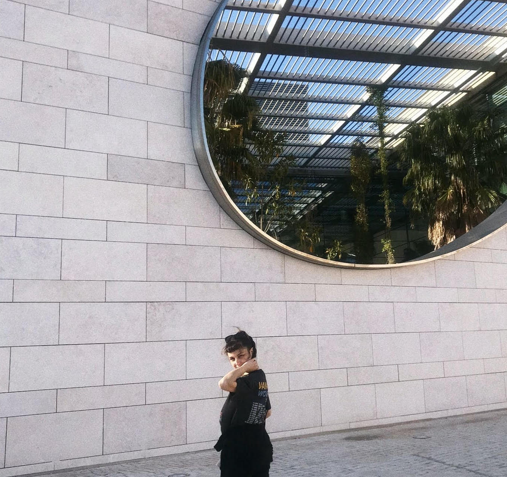

<!DOCTYPE html>
<html lang="en">
<head>
    <meta charset="utf-8">
    <meta name="viewport" content="width=device-width, initial-scale=1.0">
    <meta http-equiv="X-UA-Compatible" content="ie-edge">
    <title>Marta Aleixo Portfolio</title>
    <link rel="stylesheet" href="assets/css/style.css">
    <link rel="preconnect" href="https://fonts.googleapis.com">
    <link rel="preconnect" href="https://fonts.gstatic.com" crossorigin>
    <link rel="preconnect" href="https://fonts.googleapis.com">
    <link rel="preconnect" href="https://fonts.gstatic.com" crossorigin>
</head>
</html>
<body>
<header>
    <div class="container">
        <h1><a href="index.html" id="intro">marta aleixo</a></h1>
        <button class="btn--toggle-menu">menu</button>
        <nav id="main-navigation">
            <ul>
                <li class="menu-nav_item active"><a href="index.html">home</a></li>
                <li class="menu-nav_item"><a href="work.html" class="menu-nav_link">work</a></li>
                <li class="menu-nav_item"><a href="cv.html" class="menu-nav_link">cv</a></li>
                <li class="menu-nav_item"><a href="about.html" class="menu-nav_link">about</a></li>
                <li class="menu-nav_item"><a href="contacts.html" class="menu-nav_link">contacts</a></li>
            </ul>
           
        </nav>
    </div>
</header>


<!-- <header>
    <div class="container">
        <h1><a href="index.html">marta aleixo</h1>
        <nav id="main-navigation">
         colocar em comentario ---- <ul class="menu-nav"> 
                <ul>
                <li class="menu-nav_item active"><a href="index.html">home</a></li>
                <li class="menu-nav_item"><a href="work.html" class="menu-nav_link">work</a></li>
                <li class="menu-nav_item"><a href="cv.html" class="menu-nav_link">cv</a></li>
                <li class="menu-nav_item"><a href="about.html" class="menu-nav_link">about</a></li>
                <li class="menu-nav_item"><a href="contacts.html" class="menu-nav_link">contacts</a></li>
            </ul>
        </nav>
    </div>
</header>-->    <main class="container">
        <section class="about">
            <div class="bio">
                <div class="presentation">
                    <h2>hello! I'm Marta, a Lisbon-based digital product designer</h2>
                    <h5>Post-graduated from the Fine Arts University in Digital
                        Experience Design and Specialized in Web Design in ETIC, School of Technology,
                        Innovation & Creation between 2021 to 2023, after 8 academic years studying
                        in the field of conservation and restoration.</h5>
                    <h5>Today I work as a digital product designer and I am interested
                        in the process that the development of a digital product involves, from start
                        to finish. I enjoy the relationship between the research process and its outcomes
                        and the product strategy and how that can translate into a creative narrative that
                        offers users a good and useful digital experience.</h5>
                </div>
                <figure class="portrait">
                    
                </figure>
            </div>
        </section>
        <!-- SECÇÃO 1 
        <section class="about">
        <div class="me">
            <div class="me-presentation">
                <h2>hello! I'm Marta, a Lisbon-based digital product designer</h2>
           SECÇÃO 2
                <h5>Post-graduated from the Fine Arts University in Digital
                    Experience Design and Specialized in Web Design in ETIC, School of Technology,
                    Innovation & Creation between 2021 to 2023, after 8 academic years studying
                    in the field of conservation and restoration.</h5>
                <h5>Today I work as a digital product designer and I am interested
                    in the process that the development of a digital product involves, from start
                    to finish. I enjoy the relationship between the research process and its outcomes
                    and the product strategy and how that can translate into a creative narrative that
                    offers users a good and useful digital experience.</h5>
            </div>
            <figure class="portrait">
                
            </figure>
        </div>-->
        </section>
    </main>
<footer>
    <p class="copy">©marta aleixo 2023</p>
</footer>
<script src="/assets/js/script.js"></script>


</body>

</html>